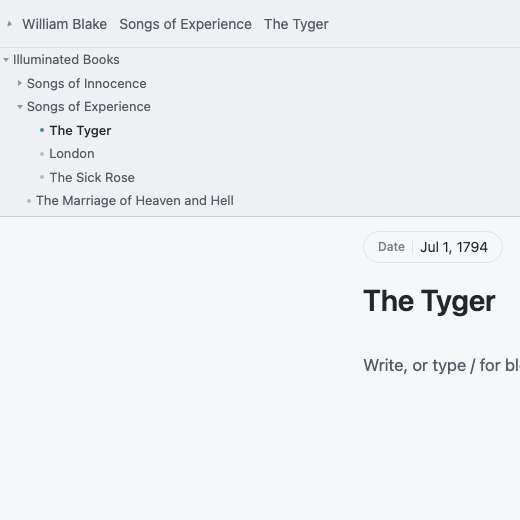
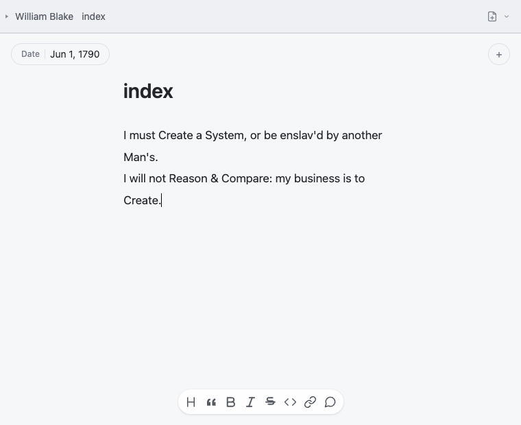
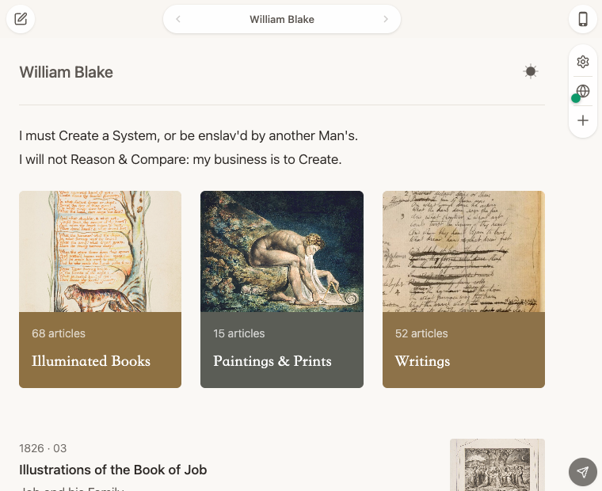

Plate 02 · Short procedure
From a page to its site.
Use the step buttons or Left and Right Arrow keys. Printing reveals the complete sequence.

The file tree marks The Tyger as the selected page.01
Open the page
Choose a page from the current folder. Its breadcrumb appears at the top of the editor.

The cursor and toolbar stay with the draft.02
Write
Edit the title, properties, and body in the central writing surface.

The same content appears in the reader view.03
Preview
Check the built site as a reader will see it, including navigation and collections.
The paper-plane control sends the ready site.
04
Publish
Use the paper-plane publish control in the preview when the site is ready.